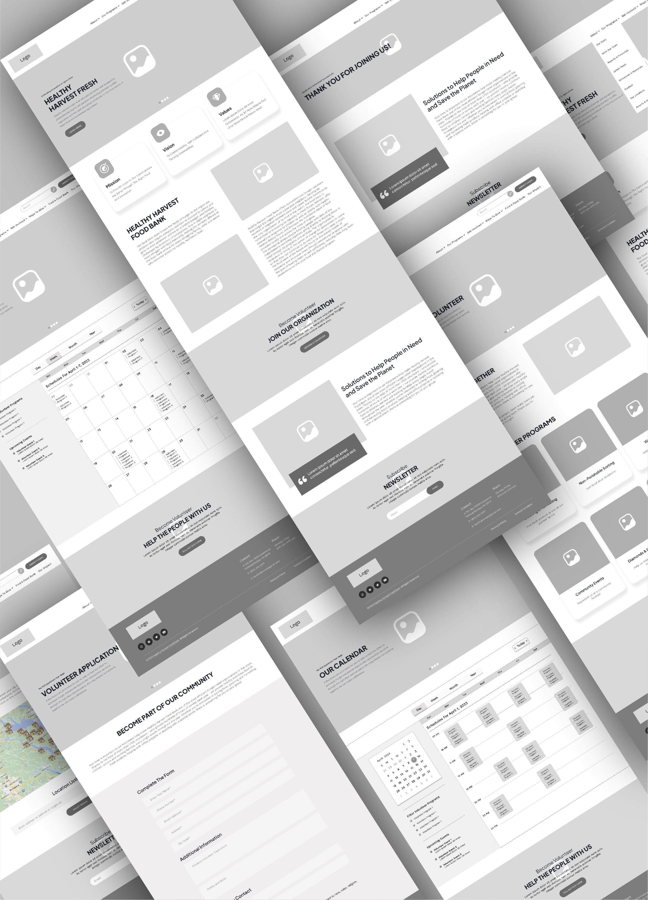

03 Weeks
Figma, Miro, Illustrator, Photoshop
Healthy Harvest Food Bank and its volunteer struggle with a clunky website. They both need clear event and website information to facilitate successful events and keep participants coming back.
This project aims to enhance volunteers' user experience by: providing a more aesthetic and streamlined web experience, and making it easier to see and book events. No doubt this website redesign will also instill a sense of pride across all HHFB's stakeholders — farmers, beneficiaries, sponsors, the board, and, of course, its full-time workers. We applied design thinking through this project: from user research to analyzing and restructuring the current site to prototyping to iterating. This case study explores that process step by step.
Data was collected form ten interviewees, aged 25 to 77, who currently volunteer for various non-profit organizations. We wanted to better understand both side of the coin: What makes their experiences fulfilling and keeps them coming back to organizations? What pain points leave room for improvement?


After conducting extensive interviews, we updated our proto-persona to the user persona below. We refined our understanding of the motivations, experiences, and challenges volunteers face.

During the ideation process, we utilized the I Like, I Wish, What If method to generate an array of ideas. We then sorted them into a feature prioritization matrix that took into account the users’ needs. This matrix allowed us to identify the most important features and functionalities that would provide users with the greatest value.

We conducted a card sorting activity to take in the entirety of the website's contents and help us consider how users might mentally categorize and organize the site's information. We also identified some potential pain points stemming from the website's current information architecture.

Creating a new user flow helped us understand the steps users takes to accomplish a specific task on our website. By mapping the flow from start to finish, we identified potential roadblocks, areas of confusion, and opportunities for improvement.

After taking into account user flows, we revisited the card sorting activity. We developed a more intuitive information architecture which, in turn, helped us create an improved navigation bar.

After completing the card sorting exercises, we created initial wireframes for desktop and mobile devices. We conducted more usability tests and iterated based on our findings. For example, users were getting stuck in the calendar, unsure how to sign up for an event. To solve this problem, we added a buttons to either see the calendar or go straight to the volunteer form. We also changed View Calendar to View Events.
To choose a color palette, we drew inspiration from Healthy Harvest's logo, the maritime geography of the Northern Neck, and agricultural colors that match the organization's work. We opted for sans serif fonts for a modern feel, along with standard differentiations between typeface sizes.


After user testing and iterating, the final, high-fidelity prototype represents a significant improvement over earlier prototypes. With an enhanced user experience and more polished look and feel, it meets the needs and expectations of our target audience.